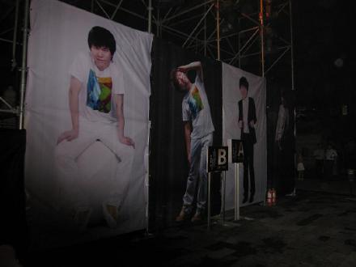
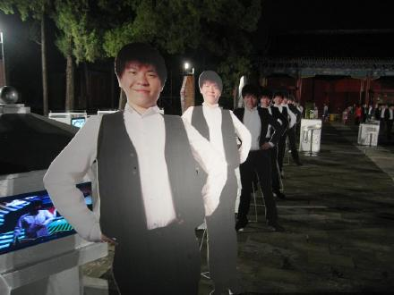
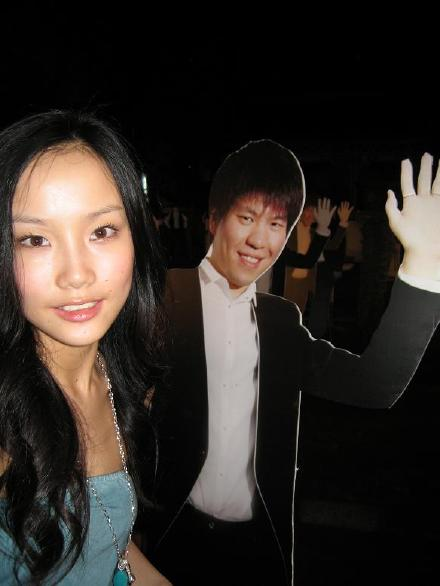
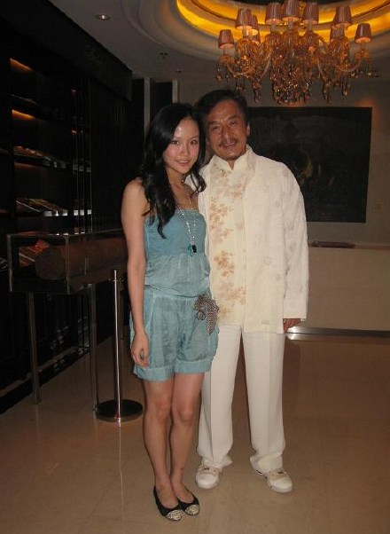
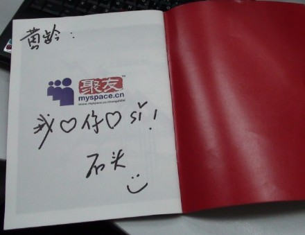

台风入境，我迫不及待的想离开上海，飞往北京。我忐忑的坐在候机厅，祈祷飞机不会因为台风的到来而推迟。
虽然飞机最终还是延误了，但是谢天谢地总归是起飞了。因为晚上，就是常石磊的新专辑《NIU CHINA》发表会。飞机上吵吵闹闹，后座的小孩不停的动，不停的跟妈妈吵架，跟空姐要不同的饮料，喝了一两口又要换别的。突然想起我和石头之前说过，以后一定不要孩子，耐不了那个烦。
飞机安全降落北京国际机场。走出舱门那一刻真想大喊石头我来了。打了辆车去了朋友推荐的某家酒店，我没有提前预定房间，前台的人斜眼说只有一间980的标准房。我觉得酒店看起来很普通，这个价钱有点贵，但是因为实在太累，北京我也不熟悉，懒得折腾，就入住了。进房间一看，是个三角形的房间。请问你们老板是有多么的爱几何图形？
我不想去打扰北京的朋友，更不想一个人拖着行李在街头找酒店，太狼狈太流浪女了吧。反正我这次来也不是玩，是来看石头的，听他唱歌的。
夏天的北京真是异常的冷。房间空调开到30度还是觉得哆嗦，我想时间尚早，睡一会吧。可是翻来覆去睡不着。总怕一不小心睡过头，错过了石头的发布会。
晚上8点钟，我终于来到了北京历代帝王庙门口，两顿都没吃，肚子空空，整个躯体只剩下一颗快要跳出来的心。发布会在帝王庙，千古神圣的气息。天哪！我看见了石头站在台上，我差点就认不出他来了，他瘦了很多很多。听见石头温暖的声音了，我好想尖叫，我在离他不到10米的地方，他就站在我眼前的舞台上唱歌HERO，不知道怎么去形容自己的心情，我哭了，眼泪不止……
他穿了很合身的西装，那样的帅气，声音却是温暖的没有距离。我看到了陈其钢老师做在最中间，像父亲一样的看着台上的儿子，成龙大哥坐在第一排非常认真和仔细的欣赏着石头，还有王平久老师像警察一样边听着石头唱歌，眼睛一边巡逻着工作人员有没有出什么差错，其他贵宾也是同样的安静着欣赏着石头演唱，我心想：又一片人被征服了。当晚是多么的梦幻，石头的演唱，石头和他伙伴们的合作表演，石头的妈妈出现，陈老师一翻话，成龙大哥的态度，观众的反应，石头眼泪，大家的眼泪，每一分每一秒都是感动的，石头说：那段为奥运写歌的日子一直到现在是对他来说是多么的珍贵，没有《我和你》就没有他今天的舞台，他觉得是非常的不可思议，他感谢喜欢他音乐的人和支持他做音乐的人，以后的路还很长，要面临很多事情，他不知道自己能坚持多久，他也管不了那么多了，他只会一直用心做他的音乐唱的歌。
常石磊心里的感动，只有和他一起经历的人才能感受到。对我而已，常石磊是教我唱歌改变我唱歌的人，《痒》这张专辑的录音过程几乎都是他陪我度过的。跑去后台见到常石磊的时候，我们紧紧的拥抱在一起，我又激动的哭了，我以为以后都很难见到他了，以后都很难找他写歌找他玩了。他还是那样很温柔的拉着我的手用不标准的上海说：亲爱的，侬来拉，伐要哭，伐哭了呀，睫毛花了，吾一定会帮你写歌，我喜欢你的…
他总是那样的温暖，那样的心细，看到他就觉得世界平和了…
写这些的时候，我逼迫自己不要去听石头的专辑。因为只要一听见他声音，我什么东西都写不出来，已经沉溺了。

青春活泼运动的石头

欢迎你的到来

先跟假人合影留恋
终于和真人照上了相
不愿意分开

啊！成龙大哥和我一样，都是石头的粉丝。
发布会在这里，太妙了！

石头的多媒体专辑《NIU CHINA》。还不快点去听！